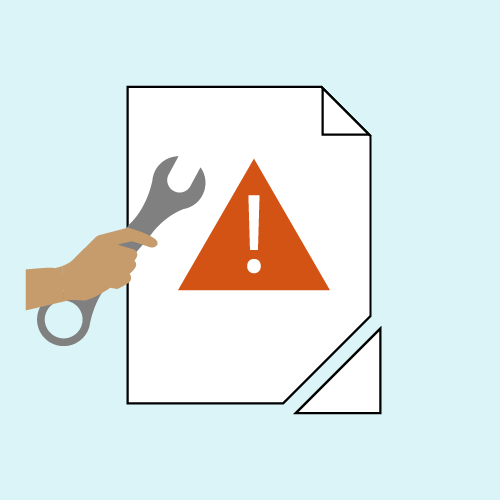
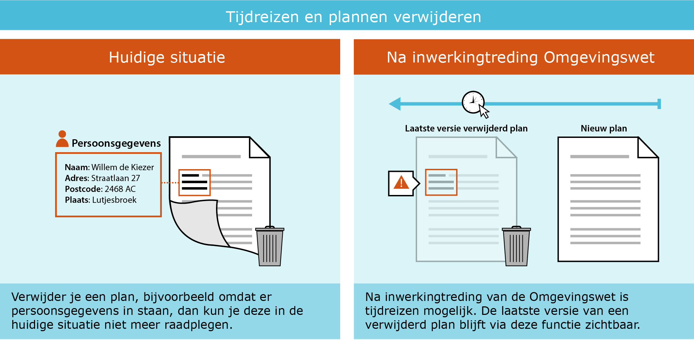
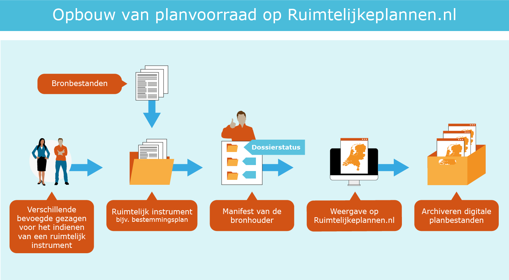

1. Inleiding
In dit eerste hoofdstuk van de handreiking over de gegevenskwaliteit van ruimtelijke plannen wordt de context van het concept ‘Data op orde’ uitgelegd.
1.1 Aanleiding
De zolder opruimen voor de verbouwing
In de loop der jaren zijn er via de landelijke voorziening Ruimtelijkeplannen.nl veel waardevolle gegevens gepubliceerd; en een grote planvoorraad is toegankelijk gemaakt. Maar net zoals een zolder die zo nu en dan opgeruimd moet worden om goed bruikbaar te blijven, geldt dit ook voor de planvoorraad. Zeker als er een grote verbouwing zoals de Omgevingswet op komst is. Alle gegevens in Ruimtelijkeplannen.nl gaan mee naar de Omgevingswet. Zo ook bestemmingsplannen e.d. die opgaan in het tijdelijk omgevingsplan. Deze plannen blijven geldig totdat zij worden vervangen door een nieuw omgevingsplan conform de nieuwe standaard STOP/TPOD.
Het Informatiehuis Ruimte (IHR) heeft de overbruggingsfunctie gerealiseerd. Deze overbruggingsfunctie zorgt ervoor, dat de gegevens van Ruimtelijkeplannen.nl in het Digitale Stelsel Omgevingswet (DSO) worden ontsloten en in samenhang met de Omgevingswet instrumenten kunnen worden getoond. Hiervoor hoeft de bronhouder (resp. gemeente, provincie of het Rijk) in principe niets te doen, dit gebeurt automatisch.
Zowel voor bronhouders als gebruikers van het DSO is het belangrijk dit zo proces zo soepel mogelijk verloopt. Daarom is het belangrijk dat de gegevenskwaliteit van de ruimtelijke plannen in de landelijke voorziening, maar ook bij de bronhouder zelf, zo hoog mogelijk is.
1.2 Doel: Verbeteren gegevenskwaliteit
Het doel voor data op orde is het verbeteren van de gegevenskwaliteit. Dit kunnen we grofweg verdelen in 2 onderdelen.
1. Foutherstel
Fouten in de planvoorraad kunnen ertoe leiden dat plannen niet, of niet goed ontsloten worden in het DSO. Deze fouten moeten hersteld worden.
2. Opschonen van de planvoorraad
In de loop der jaren is de planvoorraad op Ruimtelijkeplannen.nl enorm uitgebreid. Vaak zijn wel plannen toegevoegd maar zijn er geen vervallen plannen en verouderde versies verwijderd.

Waarom is de kwaliteit van de planvoorraad zo van belang?
- Ten eerste wordt een aanzienlijk deel van de huidige planvoorraad onderdeel van het tijdelijk omgevingsplan. Het is daarom van groot belang dat daar niet te veel, maar ook niet te weinig in zit.
- Het zorgt ervoor dat DSO functionaliteit om huidige plannen beter en gerichter te kunnen ontsluiten voor gebruikers, zoals de overbruggingsfunctie en bepalen leidend plan, beter werken. Hiervoor is vooral belangrijk dat metadata zoals plan- en dossierstatus, plantype en verwijzingen tussen plannen kloppen en actueel zijn.
- Een ‘schone’ planvoorraad creëert een goede uitgangspositie voor het maken van het eigenlijke omgevingsplan. De onderliggende gegevens (bijvoorbeeld planobjecten en achterliggende gegevens) zijn dan al beschikbaar.
- Last but not least helpt een betere gegevenskwaliteit ook de huidige dienstverlening, aan de balie, via Ruimtelijkeplannen.nl of eigen website te verbeteren.
De huidige planvoorraad verschilt per organisatie; het kan gaan om enkele tientallen tot honderden ruimtelijke plannen per bronhouder. Om bronhouders te helpen bij het ordenen en opschonen van de digitale planvoorraad is deze handreiking tot stand gekomen. Met deze handreiking geven we aan welke punten belangrijk zijn bij de gegevenskwaliteit van deze (digitale) planvoorraad en hoe deze kan worden verbeterd.
1.3 Leeswijzer
In deze handreiking worden de verschillende onderwerpen toegelicht en worden handige tips & tricks gegeven. De normen en praktijkrichtlijnen, alsook de handreiking archiveren, zijn hiervoor altijd de basis.
In hoofdstuk 2 Algemene werkwijze bij foutherstel geven we de kaders voor foutherstel van ruimtelijke plannen, wat mag je wel aan een plan wijzigen en wat niet en wat is de te volgen werkwijze.
In hoofdstuk 3 Uitwerking foutherstel in de planvoorraad gaan we inhoudelijk in op de meest voorkomende fouten in de planvoorraad. Welke fouten zijn dit, wat zijn consequenties hiervan en hoe kunnen deze fouten worden opgelost.
In hoofdstuk 4 De planvoorraad opschonen gaan we dieper in op de planvoorraad en lichten we toe hoe deze zo optimaal mogelijk opgeschoond kan worden.
2. Algemene Werkwijze bij Foutherstel
Ambtelijk foutherstel in een ruimtelijke plan of besluit door de bronhouder, zonder voorafgaand besluit, is het herstellen van de metadata c.q. de technische kenmerken van het ruimtelijk plan of besluit of het opheffen van inconsistenties in de planvoorraad tussen bronhouder en Ruimtelijkeplannen.nl.
2.1 Werkafspraak vs. Handreiking
Bij onduidelijkheden, tegenstrijdigheden of fouten in de RO Standaarden kan het werkveld de beheerders van de standaarden vragen hoe je de standaard nu moet gebruiken totdat een officiële wijziging van de standaard de onduidelijkheid recht zet. Deze tussentijdse adviezen over het gebruik van de RO Standaarden heten werkafspraken.
De werkafspraak ‘Wijzigen reeds eerder gepubliceerde plannen(STRI/IMRO)’ betreft in dit geval geen wijziging van de Standaard Toegankelijkheid Ruimtelijke Instrumenten/ Informatiemodel Ruimtelijke ordening maar een nadere uitleg en dringend advies over de toepassing van de RO Standaarden bij vastgestelde plannen. De werkafspraak is de basis voor deze handreiking. De hiernavolgende paragrafen zijn aanvullend op deze werkafspraak.
2.2 Aanpassing van vorm- of technische aspecten
De hoofdregel is dat foutherstel niet gaat over de inhoud van een plan of besluit, maar om vorm- of technische aspecten die van belang zijn voor blijvende raadpleegbaarheid, bruikbaarheid en toegankelijkheid van het plan. Foutherstel is alleen mogelijk:
- Als het gebrek niet gaat over de inhoud van het besluit, maar om bepaalde metadata of inconsistentie tussen bronhouder en Ruimtelijkeplannen.nl kan worden volstaan met een ambtelijk herstel zonder besluit. Voorbeelden van type aanpassingen zijn:
- Foutherstel van de dossierstatus in het manifest
- Foutherstel van metadata van de planset zoals, typeplan, datum en status info, overheidscode, identificatienummer, verwijzingen naar externe plannen.
- Anonimiseren van documenten naar aanleiding van de AVG
- Randvoorwaarde is dat een goede verantwoording van uitgevoerd foutherstel is gewaarborgd bij de bronhouder. Hierdoor kan later door de bronhouder altijd gereconstrueerd worden wat de aanleiding van de hersteloperatie was en wie, wanneer, wat en hoe het herstel heeft uitgevoerd. Dat geldt nu binnen de context van de Wro, maar evengoed straks binnen de context van de Omgevingswet/ het DSO-LV.
Bij gebreken aan de inhoud van het plan of besluit zal het bevoegd gezag een nieuw besluit moeten nemen of een nieuwe procedure moeten volgen. Een nieuwe procedure starten conform Wro en op basis van de RO Standaarden kan tot inwerkingtreden Omgevingswet.
2.3 Uitvoeren foutherstel
De bronhouder verwijdert het ruimtelijke plan of besluit van de weblocatie en uit het manifest. Door het verwijderen van het plan uit het manifest, wordt door de landelijke voorziening Ruimtelijkeplannen.nl het plan ook van Ruimtelijkeplannen.nl gehaald. Het plan is niet meer beschikbaar en raadpleegbaar via Ruimtelijkeplannen.nl.
De bronhouder past de betreffende metadata in dezelfde versie van het plan aan. Het planidentificatienummer van het plan blijft hetzelfde. Het volledige aangepaste plan zet de bronhouder binnen 24 uur weer op de weblocatie en in het manifest. Het plan wordt door de landelijke voorziening geladen en is weer raadpleegbaar via de viewer van Ruimtelijkeplannen.nl.
Doorlooptijd van foutherstel
De gehele cyclus van foutherstel is mogelijk binnen 24 uur. Dit omdat Ruimtelijkeplannen.nl sinds voorjaar 2018 tweemaal per dag de plannen harvest (planwijzigingen ophaalt) bij de bronhouder. Het verwijderen kan ’s ochtends plaatsvinden, het plaatsen van een nieuwe versie ’s middags. De ‘offline’ tijd van een plan blijft zo minimaal.
2.4 Relatie met tijdreizen
Op dit moment is ‘tijdreizen’ niet mogelijk in Ruimtelijkeplannen.nl. Het is dus niet mogelijk om te kijken naar een situatie uit het verleden. Vanaf het moment dat de Omgevingswet in werking treedt is tijdreizen alleen mogelijk met het Omgevingsloket (of met de bijbehorende DSO-LV API's) en niet met Ruimtelijkeplannen.nl. Tijdreizen is dan alleen mogelijk naar een versie van het plan dat als laatste is gepubliceerd.
We onderscheiden dus de volgende 2 situaties.
- Verwijderde plannen voor in werking treden Omgevingswet zijn middels tijdreizen niet raadpleegbaar in het DSO;
- Verwijderde plannen na inwerkingtreden Omgevingswet, hiervan blijft via tijdreizen de laatste versie raadpleegbaar in het DSO. De laatste versie is het laatst geladen plan onder hetzelfde planidentificatienummer*.
*) Zie ook paragraaf 2.3
Zeker bij foutherstel in het kader van de Algemene verordening gegevensbescherming (AVG), moet hier rekening mee gehouden worden, zie paragraaf AVG-Proof in deze handreiking.
2.5 Verantwoording bij aanpassingen
Ook indien er geen juridische consequenties zijn verbonden aan het herstel van de metadata, vragen aanpassingen van het plan wel om verantwoording: de aanpassingen moeten gerechtvaardigd zijn en in ieder geval intern bij de verantwoordelijke bronhouder expliciet verantwoord kunnen worden. Een duidelijke werkwijze helpt hierbij. De aanbeveling is hierbij de volgende spelregels in acht te nemen:
- Een kennelijke verschrijving wordt opgelost met een ambtelijke wijziging. Dit betekent altijd dat de wijziging van de metadata van het plan, hetzij in een nieuwe versie, hetzij in dezelfde versie moet kunnen worden verantwoord. Intern wordt deze ambtelijke wijziging vastgelegd in het zaak/proces/documentbeheer systeem dat wordt gehanteerd door de bronhouder tijdens de planprocedure.
- Het is hierbij aan te bevelen om de gewijzigde versie van het ruimtelijke plan samen met de verantwoording van de wijziging door de bronhouder te archiveren. De oorspronkelijke versie (zonder aanpassingen in de metadata) hoort dan ook in het archief opgenomen te blijven.
- De planvoorraad op de weblocatie, met manifest, moet na afronding van het foutherstel (weer) gelijk zijn aan de planvoorraad bij de landelijke voorziening Ruimtelijkeplannen.nl*.
-
*) Zie ook paragraaf 2.3.
In Hoofdstuk 5 is een voorbeeld formulier opgenomen die de bronhouder kan gebruiken voor verantwoording en samen met de nieuwe versie van het ruimtelijke plan, intern archiveert. De handreiking Archiveren ruimtelijke plannen is beschikbaar via de Geonovum website onder het kopje Handreikingen
3. Uitwerking foutherstel in de planvoorraad
Het is belangrijk dat technische fouten in de planvoorraad door de bronhouder worden aangepast; technische fouten kunnen ertoe leiden dat plannen niet of onjuist worden weergegeven in de viewer van het Omgevingsloket.
Bronhouders kunnen via ‘Het kwaliteitsdashboard’ van het Kadaster hun planvoorraad zelf monitoren op de meest voorkomende fouten. Om toegang te krijgen tot het kwaliteitsdashboard dien je eerst in te loggen in het portaal van Mijn Kadaster. Iedere bronhouder kent een zogenaamde “eerste beheerder” die deze toegang kan regelen.
3.1 Consistent gebruik planstatus en dossierstatus
Via het manifest van de bronhouder wordt de planvoorraad van het bevoegd gezag beschikbaar gesteld op Ruimtelijkeplannen.nl. In het manifest is ordening aangebracht met behulp van dossiers. In een dossier zijn één of meerdere ruimtelijke plannen opgenomen van dezelfde procedure. Ieder plan heeft een ‘planstatus’, daarnaast heeft het dossier waarin het plan zich bevindt een zogenaamde ‘dossierstatus’. Op basis van deze dossierstatus wordt bepaald in welke fase van de procedure een plan zich bevindt zoals bijvoorbeeld: ‘in voorbereiding’, ‘vastgesteld’ of ‘geheel onherroepelijk in werking’.
De dossierstatus moet passend zijn met de status van het plan in het dossier. Voorbeeld: bevat een dossier uitsluitend een plan met de planstatus ‘concept’, ‘voorontwerp’ of ‘ontwerp’ dan is de dossierstatus ‘in voorbereiding’. Wijzigt de status van het plan in ‘vastgesteld’ dan zal door de bronhouder ook de status van het dossier moeten worden aangepast, eerst in ‘vastgesteld’, maar afhankelijk van het verloop van de procedure naar een volgende status.
In bijlage 1 van de Praktijkrichtlijn Toegankelijkheid Ruimtelijke Instrumenten (PRTRI) zijn de mogelijke dossierstatussen van ruimtelijke instrumenten beschreven. De verschillende dossierstatussen zijn omschreven in paragraaf 5.7 van de PRTRI2012, en de planstatussen in paragraaf 5.6 van de PRTRI2012.
Gevolgen in Viewer regels op de kaart van het DSO-LV
Onder meer op basis van de dossierstatus, wordt bepaald of het plan wel of niet op de juiste wijze zichtbaar is in de viewer van het DSO-LV. Bijvoorbeeld: wanneer een ‘vastgesteld’ plan in werkelijkheid ‘geheel onherroepelijk in werking’ is, maar de dossierstatus van dit plan staat nog op ‘in voorbereiding’, dan zal dit plan niet als ‘geldende regelgeving’ in het DSO worden getoond. Het is dus van groot belang dat de dossierstatus goed is. Uit monitoring blijkt echter dat met name dit type fout vaak voorkomt. Belangrijk dus om als bronhouder hier iets aan te doen.

Bovenstaande figuur maakt duidelijk wat de gevolgen zijn van een onjuiste dossierstatus/ planstatus is wanneer de gebruiker op Ruimtelijkeplannen.nl zoekt op adres, perceel of een geselecteerd gebied in de viewer.
De meest voorkomende fouten zijn:
- Vastgestelde plannen (en/of onherroepelijk plannen IMRO2008) in een dossier dat op ‘in voorbereiding’ staat;
- Vastgestelde plannen waarbij het dossier na de beroepstermijn op ‘vastgesteld’ blijft staan;
- Plannen die geen beroep/bezwaartermijn kennen die dossierstatus 'vastgesteld' krijgen, waar dat 'geheel onherroepelijk in werking' moet zijn.
Wat te doen?
- Pas de dossierstatus aan in het manifest. Let daarop dat de juiste dossierstatus gekozen wordt.
- Het aanpassen van de dossierstatus is voor de bronhouder relatief eenvoudig. Aan het plan hoeft niets te worden gewijzigd. Uitsluitend het manifest wordt aangepast.
- Let op bij de planstatus ‘vastgesteld’ wijzigt de plantstatus niet meer, maar alleen de dossierstatus.
3.2 Beschikbaarheid van de planvoorraad
De planvoorraad op de weblocatie bij de bronhouder moet exact overeenkomen met de planvoorraad bij Ruimtelijkeplannen.nl. Dit is een wettelijke verplichting en de bronhouder is hiervoor verantwoordelijk. In de praktijk blijkt dit niet altijd op orde. Er doen zich verschillende situaties voor, die we hierna verder uitwerken:
- Een plan staat wel in het manifest en daardoor ook op Ruimtelijkeplannen.nl, maar het plan (of planonderdelen) zijn niet beschikbaar bij de bronhouder.
- Plan staat wel in het manifest en bij de bronhouder maar niet op Ruimtelijkeplannen.nl.
- Er zitten inhoudelijk verschillende plannen in hetzelfde dossier.
3.2.1 Plan staat wel op Ruimtelijkeplannen.nl, maar is niet (of deels niet) beschikbaar bij de bronhouder
In het manifest van de bronhouder staan de locaties van alle door de bronhouder gepubliceerde plannen, in het geleideformulier bij het plan staan alle afzonderlijke planonderdelen. Ruimtelijkeplannen.nl maakt van dit manifest en deze geleideformulieren gebruik. Wanneer de bronhouder een plan publiceert, haalt Ruimtelijkeplannen.nl op deze locatie het plan op en plaatst het in de landelijke voorziening Ruimtelijkeplannen.nl en wordt het raadpleegbaar gemaakt via de viewer van de landelijke voorziening Ruimtelijkeplannen.nl. Met de index wordt de URL naar de bronhouderlocatie beschikbaar gesteld. Eenieder kan nu via de index over het plan beschikken. De bronhouder voldoet zo aan de wettelijke eisen.
Wanneer, na het publiceren van het plan, de bronhouder het plan verwijdert of verplaatst, verandert de URL naar de locatie van het plan. Wanneer dit niet in het geleideformulier en het manifest wordt aangepast, blijft het plan wel raadpleegbaar via Ruimtelijkeplannen.nl, maar is het niet meer via de index beschikbaar. Hierdoor voldoet de bronhouder niet meer aan zijn verplichting van raadpleegbaarheid en beschikbaarheid.
Wat te doen?
Om er voor te zorgen dat het plan weer raadpleegbaar en beschikbaar is, kunnen twee werkwijzen worden gevolgd.
- Het plan opnieuw publiceren
Hiervoor moet eerst het plan uit het manifest worden verwijderd. Ruimtelijkeplannen.nl zal het plan nu ook verwijderen. Het plan 24 uur later opnieuw waarmerken, valideren en publiceren. Om een plan met hetzelfde planidentificatienummer opnieuw te kunnen publiceren moet het minimaal 1 dag van Ruimtelijkeplannen.nl verwijderd zijn.
- Terugplaatsen van de identieke gewaarmerkte versie
Hierbij wordt de identieke gewaarmerkte versie van het plan, waarvan de overige metadata zoals plandatum niet door de bronhouder wordt gewijzigd, teruggeplaatst naar de locatie zoals deze in het geleideformulier en het manifest is aangegeven.
3.2.2 Plan staat wel in het manifest en bij de bronhouder maar niet op Ruimtelijkeplannen.nl
Dit komt voor wanneer Ruimtelijkeplannen.nl het plan niet correct kan ophalen. De bronhouder ontvangt dan een bericht op het mailadres dat de bronhouder heeft opgegeven bij de index van Ruimtelijkeplannen.nl. Het betreft hier vaak een validatie probleem.
Wat te doen?
Naar aanleiding van het bericht van Ruimtelijkeplannen.nl kan de bronhouder achterhalen wat de fout in het plan is. De bronhouder moet het plan aanpassen en opnieuw waarmerken, valideren en publiceren. Dit soort problemen kan ondervangen worden door het plan zelf eerst handmatig te valideren met de validator van Ruimtelijkeplannen.nl, en eventueel te publiceren in de pilot omgeving van Ruimtelijkeplannen.nl.
Alle meldingen van Ruimtelijkeplannen.nl worden verstuurd naar het mailadres dat de bronhouder via de index heeft aangemeld bij het Kadaster. Het is belangrijk dat er regelmatig gecheckt wordt of dit mailadres nog actueel is en regelmatig gelezen wordt. Eventuele wijzigingen van contactpersonen bij de bronhouder, kunnen worden doorgegeven aan het Kadaster via het wijzigingsformulier op de website van Ruimtelijkeplannen.nl.
3.2.3 Inhoudelijk verschillende plannen zitten in hetzelfde dossier
Dit probleem komt zeer zelden voor, maar hier is sprake van een inhoudelijk probleem. Er zijn twee inhoudelijk verschillende plannen met hetzelfde dossiernummer vastgesteld en gepubliceerd. Het dossier bevat nu bijvoorbeeld twee ontwerpplannen van verschillende locaties.
Wat te doen?
Het beste advies hierbij is om te kijken welk plan van toepassing is. Eén van de twee plannen zal er vervolgens uitgehaald moeten worden om deze in een nieuw dossier te plaatsen zodat deze een eigen dossiernummer krijgt.
3.3 Foutief plantype
Wettelijk is vastgelegd welke plantypes welk bevoegd gezag kan en mag publiceren. Toch kan het voorkomen dat er per ongeluk plantypes worden gepubliceerd door een bevoegd gezag, die dit in feite niet mag. Dit komt omdat dit (nog) niet wordt afgevangen door de validator van Ruimtelijkeplannen.nl, en vraagt dus extra aandacht. Uit monitoring blijkt dat er een aantal gemeentelijke bronhouders zijn die per ongeluk een aanwijzingsbesluit hebben gepubliceerd terwijl dit een ander type besluit betreft.
Wat te doen?
- Verwijder het betreffende plan uit het manifest;
- Controleer altijd, voordat een plan opnieuw wordt gepubliceerd, of het verwijderde plan ook daadwerkelijk van Ruimtelijkeplannen.nl verwijderd is;
- Plantype aanpassen;
- Opnieuw waarmerken, valideren en publiceren en een dag later weer aanbieden aan Ruimtelijkeplannen.nl. *
*) zie ook: paragraaf 2.3
3.4 Relaties: Verwijzen naar extern plan
Relaties tussen plannen en relaties binnen plannen kunnen worden vastgelegd om zo beter inzicht te krijgen in de geldende regels op een locatie. Soms heeft dit een wettelijke grondslag, soms een praktische reden. Het helpt de planmaker maar ook de raadpleger van het plan om zo meer grip te krijgen op een geldige situatie op een locatie. Ook in de viewer van het DSO wordt gebruik gemaakt van deze relatie tussen plannen.
In de praktijk blijkt vaak dat er onvolledig een relatie wordt gelegd tussen plannen terwijl dit wel wordt voorgeschreven in het Informatiemodel Ruimtelijke Ordening (IMRO2012). In hoofdstuk 4 van de Praktijkrichtlijn Bestemmingsplannen 2012 (PRBP2012) is toegelicht hoe om te gaan met de verwijzing naar extern plan van uitwerkingsplan, wijzigingsplan, gedeeltelijke herziening van 1 bestemmingsplan en gedeeltelijke herziening van meerdere bestemmingsplannen (parapluherziening).
In hoofdstuk 5 van de PRGB2012 is omschreven hoe om te gaan met de verwijzing naar extern plan van aanwijzing, beheersverordening, exploitatieplan, gerechtelijke uitspraak en omgevingsvergunning.
Wat te doen?
- Verwijder het betreffende plan uit het manifest;
- Controleer altijd, voordat een plan opnieuw wordt gepubliceerd, of het verwijderde plan ook daadwerkelijk van Ruimtelijkeplannen.nl verwijderd is;
- Pas het attribuut ‘verwijzingNaarExternPlanInfo’ aan;
- Opnieuw waarmerken, valideren en publiceren en een dag later weer aanbieden aan Ruimtelijkeplannen.nl.
3.5 Naamgeving plannen (Chw en TAM)
Crisis en herstelwet plannen (Chw)
Met het wijzigen van het Besluit Crisis- en herstelwet in mei 2014 (Stb. 2014, nr. 168) is het voor gemeenten mogelijk bestemmingsplannen (met verbrede reikwijdte) te maken waarmee onder andere kan worden afgeweken van een aantal met name genoemde onderdelen van de geldende wet- en regelgeving. Een van de aspecten waar gemeenten onder voorwaarden van af mogen wijken zijn de digitale aspecten met RO Standaarden en Ruimtelijkeplannen.nl. Om ervoor te zorgen dat deze plannen wel herkenbaar zijn is in de werkafspraak ‘Chw bestemmingsplannen digitaal beschikbaar stellen’ onder andere vastgelegd dat de naamgeving van het plan moet beginnen met: ‘Chw bestemmingsplan’. Wanneer u op dit moment een Chw bestemmingsplan heeft gepubliceerd zonder de juiste naamgeving, kunt u dit alsnog aanpassen.
Wat te doen?
- Verwijder het betreffende plan uit het manifest;
- Controleer altijd, voordat een plan opnieuw wordt gepubliceerd, of het verwijderde plan ook daadwerkelijk van Ruimtelijkeplannen.nl verwijderd is;
- Pas de plannaam conform de werkafspraak aan;
- Opnieuw waarmerken, valideren en publiceren en een dag later weer aanbieden aan Ruimtelijkeplannen.nl.
Tijdelijke Alternatieve Maatregel (TAM)Bij inwerkingtreden van de Omgevingswet zal het, voor zover nu bekend, nog enige tijd mogelijk zijn om met behulp van de huidige RO Standaarden en de huidige landelijke voorziening (Ruimtelijkplannen.nl) een beperkt aantakl soorten omgevingswetbesluiten op te stellen. Omdat het noodzakelijk is om deze omgevingswetbesluiten te herkennen en te kunnen onderscheiden van de Wro-besluiten, zijn werkafspraken opgesteld. Hierin is onder andere vastgelegd dat de naam van het besluit moet beginnen met TAM-[type omgevingswetbesluit], bijvoorbeeld 'TAM-omgevingsplan'.
De overbruggingsfunctie zal van deze naamgeving gebruik maken om het plan op de juiste wijze te ontsluiten in het DSO. Voor de juiste naamgeving per type omgevingswetbesluit zie de Geonovum website onder Tijdelijke Alternatieve Maatregelen.
3.6 AVG-Proof
Op grond van de Algemene verordening gegevensbescherming (AVG) wordt het afgeraden persoonsgegevens elektronisch beschikbaar te stellen, i.e. op internet te publiceren. Inspraak- of zienswijzennota’s, raadsbesluiten of in de toelichting opgenomen persoonsgegevens moeten voor publicatie geanonimiseerd worden. Dat betekent dat naam-, adres- en woonplaatsgegevens van natuurlijke personen verwijderd of machinaal onleesbaar gemaakt moeten worden. Gegevens mogen niet worden verwerkt tenzij er ten minste één wettelijke basis is om dit te doen. De bronhouder is verantwoordelijk voor deze afweging. Mocht na publicatie van het plan blijken dat er op grond van de AVG onderdelen van het plan alsnog geanonimiseerd moeten worden, dan wordt dit als technische aanpassing beschouwd.
Wat te doen?
- Verwijder het betreffende plan uit het manifest;
- Controleer altijd, voordat een plan opnieuw wordt gepubliceerd, of het verwijderde plan ook daadwerkelijk van Ruimtelijkeplannen.nl verwijderd is;
- Anonimiseer het betreffende onderdeel van het plan;
- Planversienummer niet aanpassen/ophogen;
- Opnieuw waarmerken, valideren en publiceren en een dag later weer aanbieden aan Ruimtelijkeplannen.nl.
We gaan er vanuit dat alle plannen op Ruimtelijkeplannen.nl voldoen aan de AVG, mocht dit niet zo zijn dan adviseren wij u om dit ruim voor inwerkingtreden Omgevingswet, alsnog aan te passen. Wanneer het toch noodzakelijk is om na in werking treden Omgevingswet foutherstel in het kader van de AVG door te voeren, hou dan rekening met de relatie met tijdreizen, zie paragraaf 2.4.
Voorbeeld:
De Omgevingswet is van kracht en tijdreizen in het DSO is mogelijk. U constateert dat er een Wro plan in de planvoorraad staat dat persoonsgegevens bevat. U kunt het plan dan aanpassen en onder hetzelfde versie nummer weer publiceren.
Echter, stel dat dit plan niet meer actueel is en u wilt het plan in plaats van aan te passen liever verwijderen, dan adviseren wij toch om het plan eerst te anonimiseren en opnieuw te publiceren en pas daarna te verwijderen. Hiermee wordt voorkomen dat middels tijdreizen alsnog de persoonsgegevens vindbaar zijn.
4. De planvoorraad opschonen
Gemeenten, provincies en het rijk maken met behulp van een manifest via de index van Ruimtelijkeplannen.nl inzichtelijk welke ruimtelijke plannen beschikbaar gesteld worden. In dit hoofdstuk gaan we in op de verschillende manieren om de planvoorraad op te schonen.
4.1 Opschonen van de planvoorraad
Ieder ruimtelijk instrument is opgebouwd uit een samenhangende set bronbestanden. Via het manifest van de bronhouder wordt de planvoorraad van het bevoegd gezag beschikbaar gesteld op Ruimtelijkeplannen.nl. De huidige planvoorraad op Ruimtelijkeplannen.nl is niet alleen veel data, het is ook een verzameling aan actuele en vervallen planversies door elkaar. Om deze data zo goed mogelijk te kunnen ontsluiten via het Informatiehuis Ruimte (IHR) met behulp van de overbruggingsfunctie naar het Omgevingsloket van het Digitaal Stelsel Omgevingswet, adviseren wij om de planvoorraad voor inwerkingtreden Omgevingswet op te schonen en alleen de meest actuele planversie te laten staan. Bij inwerkingtreding van de Omgevingswet ontstaat zo een beter beeld van de geldende plannen.
In dit hoofdstuk lichten we toe hoe de Wro planvoorraad zo optimaal mogelijk opgeschoond kan worden. Zodat deze zo goed mogelijk ontsloten kan worden in het DSO.
Let wel, het is een separate wettelijke verplichting van de bronhouder om alle versies van een plan te archiveren en beschikbaar te hebben in een digitaal archief van de bronhouder, de landelijke voorziening voorziet hier niet in.

4.2 Opschonen planversies na onherroepelijk worden van een plan
De bronbestanden van iedere beschikbaar gestelde versie van een ruimtelijk instrument blijven toegankelijk totdat een instrument onherroepelijk in werking is getreden of is vervallen. Dit is vastgelegd in het Besluit ruimtelijke ordening (Bro). Wanneer het instrument eenmaal onherroepelijk is, mogen de oudere versies, zoals (voor)ontwerp en eventueel eerder vastgestelde versies, verwijderd worden uit het manifest en van Ruimtelijkeplannen.nl. Wanneer het instrument vervallen is, mag het in zijn geheel verwijderd worden. Vanuit de RO Standaarden geldt hiervoor geen verplichting maar om de gegevens straks zo goed mogelijk te kunnen ontsluiten via het Informatiehuis Ruimte, adviseren wij wel om de planvoorraad op te schonen en alleen de onherroepelijke (geldende) versie te laten staan.
Voor het verwijderen van plannen en/of volledige dossiers kan het gaan om de volgende stukken:
- Oudere versies, concepten, voorontwerpen, ontwerpen van plannen waarvan de procedure inmiddels is afgerond of de procedure vroegtijdig is beëindigd;
- Verouderde voorbereidingsbesluiten (ouder dan 1 jaar);
- Vervallen plannen en dossiers, bijvoorbeeld het plan is inmiddels geactualiseerd of vergunningen die inmiddels verwerkt zijn in een bestemmingsplan;
- Plancontour & PDF Plannen (PCP) en IMRO2006 plannen die inmiddels zijn vervangen door nieuwere plannen.
Wat te doen?
Bij het verwijderen van een plan, kan deze uit het 2006 manifest worden verwijderd, het betreffende plan zal dan ook verwijderd worden van Ruimtelijkplannen.nl. In het geval door de bronhouder het laatste plan en daarmee het gehele 2006 manifest wil verwijderen, moet dit in samenwerking met het Kadaster worden gedaan. Neem hiervoor contact op met het Kadaster via het wijzigingsformulier op de website van Ruimtelijkeplannen.nl.
Wanneer de bronhouder een dossier wil verwijderen uit de planvoorraad zijn er binnen de RO Standaarden 3 opties.
- Het Dossier de status ‘vervallen’ geven
Door het dossier de status ‘vervallen’ te geven worden de plannen niet echt verwijderd uit de database van Ruimtelijkeplannen.nl. De plannen die zich in dit ‘vervallen’ dossier bevinden zijn alleen niet meer zichtbaar in de viewer van Ruimtelijkeplannen.nl. Wanneer een gebruiker op een andere wijze gebruik maakt van de data van Ruimtelijkeplannen.nl, bijvoorbeeld via de services, dan zijn deze plannen gewoon beschikbaar. Het dossier en de plannen die daarin staan hebben alleen een label ‘historisch’ meegekregen. Aan individuele planversies kan geen planstatus ‘vervallen’ meegegeven worden.
Wanneer een dossier op vervallen wordt gezet blijft het in het manifest aanwezig, inclusief de URL naar de weblocatie van de bronhouder waar het plan beschikbaar is. Het is dan ook van belang dat het plan op de weblocatie van de bronhouder beschikbaar blijft. Dit is een belangrijk verschil met het echt fysiek verwijderen van plannen. Deze plannen worden wel ontsloten in het DSO en zijn vindbaar op naam en op planidentificatienummer. Of dit wenselijk is, is aan de bronhouder.
- Het Dossier daadwerkelijk verwijderen uit het manifest en van Ruimtelijkeplannen.nl
Bij deze werkwijze verwijdert de bronhouder de oude/vervallen plannen (en het dossier) uit het manifest. Ruimtelijkeplannen.nl zal de plannen nu ook daadwerkelijk uit de database verwijderen. De plannen zijn niet meer raadpleegbaar via Ruimtelijkeplannen.nl en niet meer beschikbaar via de index. De plannen zijn nu ook niet meer beschikbaar via de services van Ruimtelijkeplannen.nl. Voorwaarde is dat de bronhouder dit ruim en dus tijdig voor inwerkingtreden van de Omgevingswet uitvoert.
- In het manifest het 2008 plan merkeren als historisch
Door het plan als historisch te markeren is dit vergelijkbaar met plannen in een 'vervallen’ dossier: het plan is wel opgenomen in de database van Ruimtelijkeplannen.nl maar niet zichtbaar in de viewer van Ruimtelijkeplannen.nl. Al deze plannen worden opgenomen in de planvoorraad van IHR en ontsloten via het Omgevingsloket van het DSO.
Gelet op de huidige ontwikkelingen, de voorbereiding op de Omgevingswet en de ontsluiting van de plannen via het Informatiehuis Ruimte in het DSO, is het advies om de oude versies, en vervallen plannen daadwerkelijk te verwijderen uit het manifest. Het is onder de Wro nooit de bedoeling geweest om Ruimtelijkeplannen.nl als archief te gebruiken (zie handreiking Archiveren ruimtelijke plannen). Zorg daarbij wel dat officiële planversies digitaal gearchiveerd worden in een gemeentelijk archiefsysteem. Een bronhouder blijft altijd zelf verantwoordelijk voor het archiveren van de data.
4.3 Toepassen van Plancontour & PDF plannen
Met het wetsvoorstel voor het vervallen van de actualiseringsplicht van bestemmingsplannen, inpassingsplannen en beheersplannen wordt beoogd om extra ruimte te scheppen voor gemeenten. De wetswijziging van de Wro geldt voor die plannen die ‘elektronisch raadpleegbaar’ zijn via Ruimtelijkeplannen.nl. Voor een plan dat niet op de website staat blijft actualiseringsplicht dus nog van toepassing.
In de toelichting op het wetsvoorstel wordt aangegeven dat een papieren (analoog) plan ook digitaal raadpleegbaar kan zijn als het als pdf-bestand op de website wordt gezet. Voor deze plannen geldt wel dat de analoge plannen de juridisch leidende plannen zijn.
Dit houdt in dat de actualiseringsplicht niet alleen vervalt voor de wettelijke digitale plannen (op basis van IMRO2008 en IMRO2012) maar ook voor plannen op basis van IMRO2006 (facultatieve standaard) en analoge plannen die door middel van een Plancontour & PDF (PRPCP2008) via de landelijke voorziening Ruimtelijkeplannen.nl zijn ontsloten. Het blijft verstandig om te actualiseren en digitaliseren volgens de laatste standaarden om zo de data op orde te blijven brengen richting de Omgevingswet.
Bij het plaatsen van een Plancontour & PDF plan wordt vaak de contour van het hele analoge plan gepubliceerd op Ruimtelijkeplannen.nl. Dit is niet noodzakelijk. Vaak zijn grote plannen in de loop der jaren gedeeltelijk vervangen door digitaal raadpleegbare plannen op basis van de RO Standaarden 2012. Om de raadpleegbaarheid en leesbaarheid van de plannen zo optimaal mogelijk te laten zijn is het verstandig om als bronhouder te bepalen voor welke locatie een analoog plan nog geldig is. Bovendien geeft het voor de interne organisatie een goed beeld van de plangebieden die nog niet geactualiseerd en gedigitaliseerd zijn. Hou er rekening mee dat niet alleen het vigerend bestemmingsplan gepubliceerd wordt als Plancontour & PDF plan, maar ook alle eventuele wijzigings- en uitwerkingsplannen die op basis van dit plan zijn gemaakt.
Wat te doen?
Bekijk per analoog plan welk gedeelte hiervan nog geldig is. Zorg dat de contour van het te publiceren plan als plancontour alleen dat gedeelte bevat dat geldig is. Dit kunnen meerdere contouren in één plangebied zijn. Zorg hierbij tevens dat op de pdf-plankaart door middel van een duidelijke lijn is aangegeven om welk(e) gebied(en) het gaat. Let bij het publiceren van een ‘oud’ plan dat de datum van dit plan de (oude) vaststellingsdatum is.